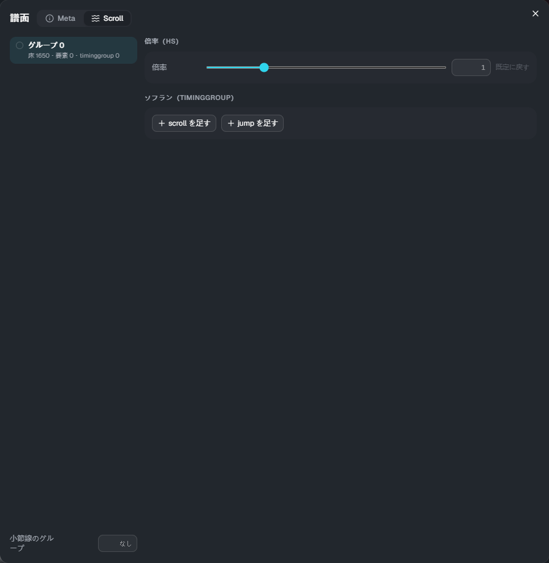

流れ方（Scroll）
床のノーツは、何も書かなければ譜面の scroll（譜面エディターの effect の scroll / jump）どおりに流れます。 「流れ方」では、それをノーツグループごとに変えられます。判定の時刻は変わりません（見える位置だけが変わります）。
ノーツのグループは、譜面エディターのノーツグループ機能で付けます。グループを付けていないノーツはグループ 0 です。
開き方
タイムラインの道具の帯の 「Scroll」 を押します（Meta と同じダイアログの、Scroll のタブが開きます）。

- 左: グループの一覧。床のノーツ・要素・timinggroup の数が出ます。タイムラインの床のノーツは、グループごとの色で塗られます
- 右: 選んだグループの設定
- 小節線のグループ: 小節線をどのグループと同じ流れ方にするか（空なら譜面の scroll どおり）
倍率（hs）
そのグループの流れる速さに、曲全体で一定の倍率を掛けます。0.1〜10 で、1 が既定（大きいほど速い）です。「既定に戻す」で 1 に戻ります。
ソフラン（timinggroup）
そのグループだけの速さの変化です。
- scroll を足す: その時刻から速さを「値」に変えます。「変える長さ」を入れると、その長さ（拍）をかけて動き方（ease）に沿ってなめらかに変えます。空ならすぐ変える
- jump を足す: その時刻に、値（ms）の分だけ先へ跳びます
- 時刻は「小節:拍+分数」（例:
4:2+1/4）で打ち込みます
倍率（hs）と一緒に使うと、ソフランの速さにさらに倍率が掛かります。
空中要素・トレースのグループ
空中要素（AirTap・AirSlide・AirLift）とトレース（Trace・Guide）は、何も指定しなければ譜面の scroll どおりに流れます。 プロパティの グループ に番号を入れると、そのグループと同じ流れ方になります。